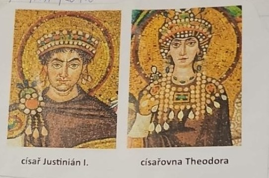
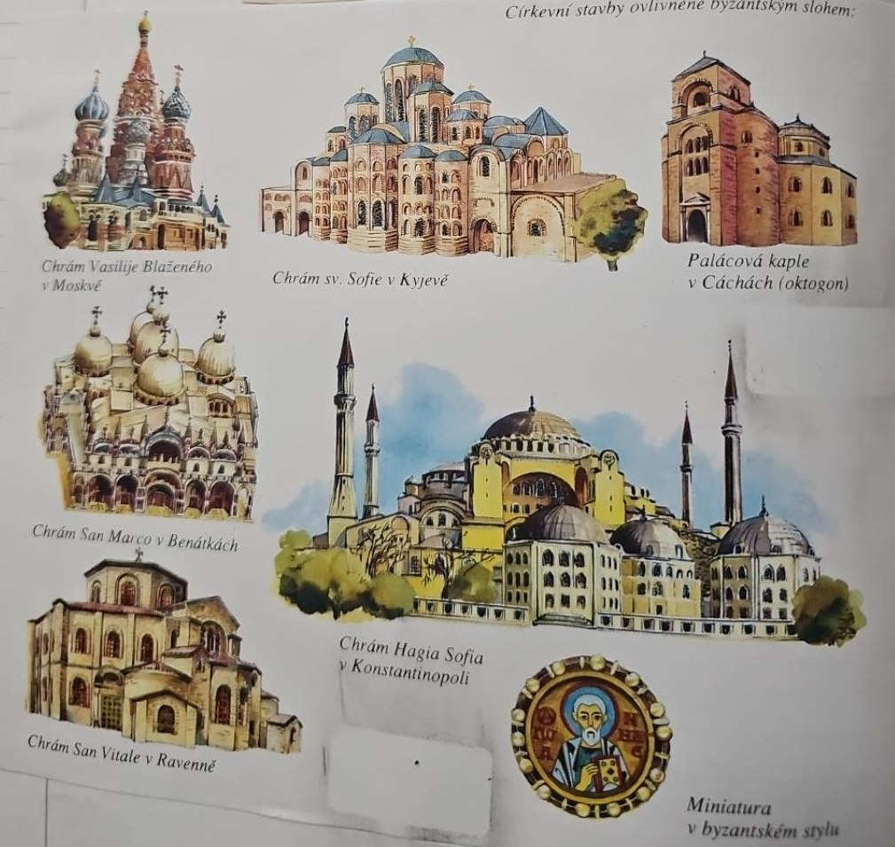
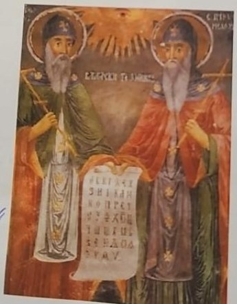
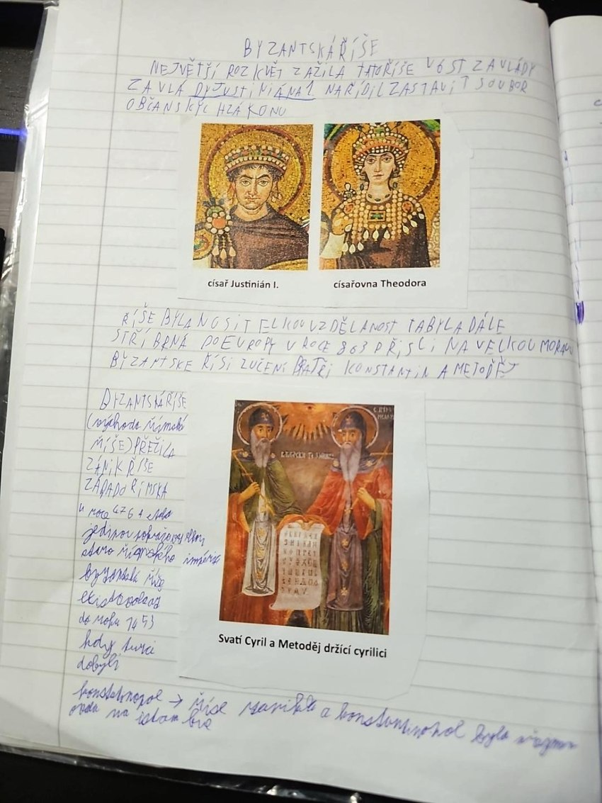
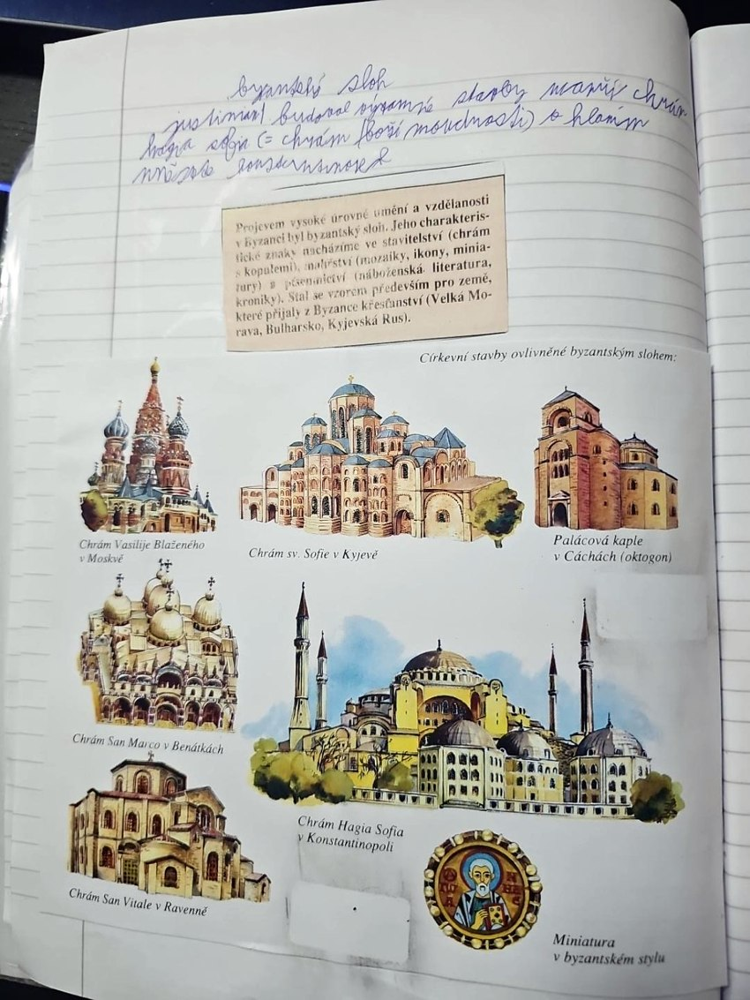

Byzantská říše
Pokračování římské říše
Po zániku Západořímské říše roku 476 východní část Římské říše pokračovala. Její obyvatelé se sami pokládali za Římany. Byzantská říše je název používaný pozdějšími historiky. Hlavním městem byla Konstantinopol.
Justinián I. a právo

V 6. století zažila říše za císaře Justiniána I. velký mocenský a kulturní rozmach. Nechal uspořádat starší římské zákony a právní texty do souboru známého jako Corpus iuris civilis. Ten pomohl zachovat římské právo a později ovlivnil evropskou právní tradici. Sešitové „soubor občanských zákonů“ je školní zkratka: nešlo o dnešní občanský zákoník.
Umění, vzdělanost a Hagia Sofia

Byzantské umění poznáš podle kopulí, mozaik a ikon. V Konstantinopoli nechal Justinián postavit velkolepý chrám Hagia Sofia, tedy chrám Boží Moudrosti. Byzanc byla důležitým střediskem vzdělanosti a její náboženské i umělecké vlivy pronikaly do dalších zemí.
Konstantin a Metoděj

Z Byzance přišli roku 863 na Velkou Moravu bratři Konstantin (později Cyril) a Metoděj. Přinesli křesťanské texty ve slovanském jazyce. Konstantin vytvořil pro jejich zápis hlaholici. Cyrilice vznikla později v prostředí jejich žáků; obrázek v sešitě s popiskem „držící cyrilici“ je tedy zavádějící.
Konec říše
Roku 1453 dobyli Konstantinopol Osmanští Turci a Byzantská říše zanikla. Tvrzení, že město bylo přesně tehdy přejmenováno na Istanbul, je nepřesné: pojmenování Istanbul se užívalo už dříve a mezinárodní úřední podoba názvu se ustálila až mnohem později.
Zapamatuj si
476 východní Řím pokračuje → 6. století Justinián, zákony a Hagia Sofia → 863 Konstantin a Metoděj s hlaholicí → 1453 dobytí Konstantinopole.

Zápis ze sešitu
Fotky stránek sešitu

